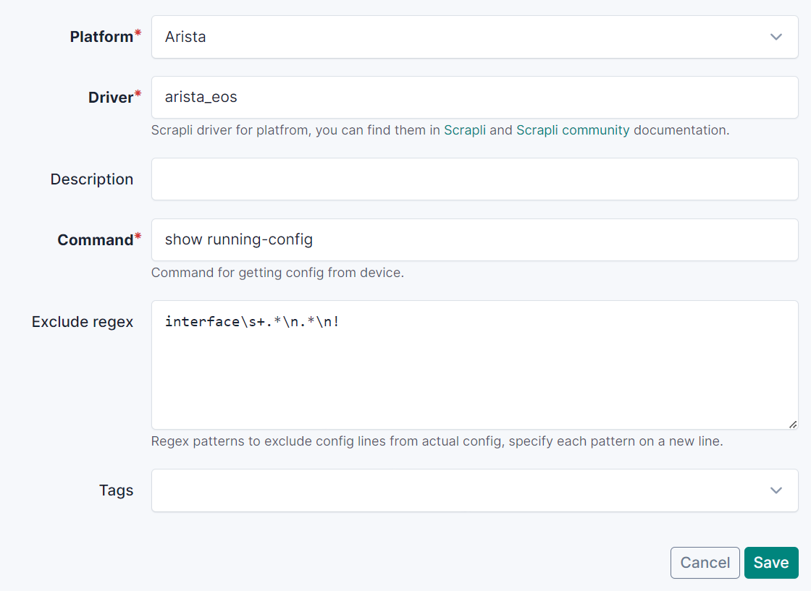
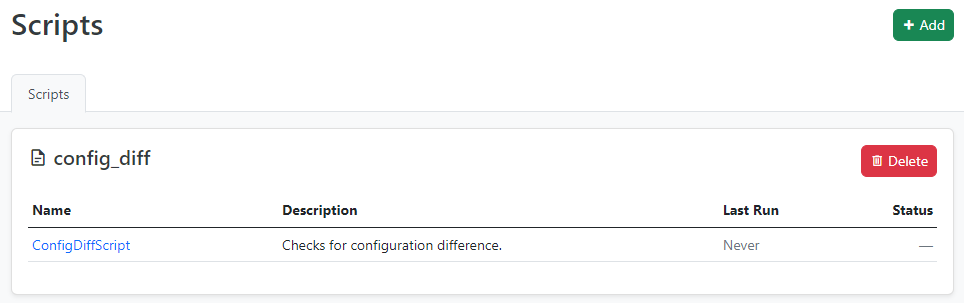
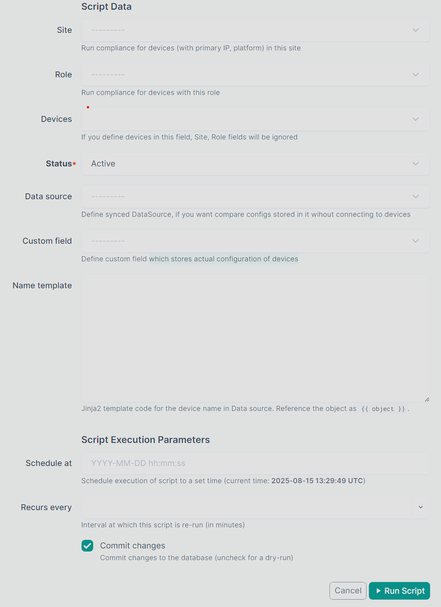
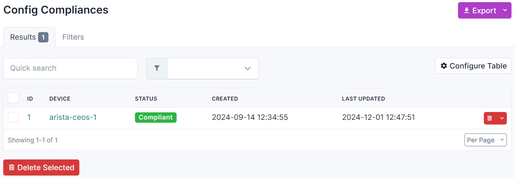
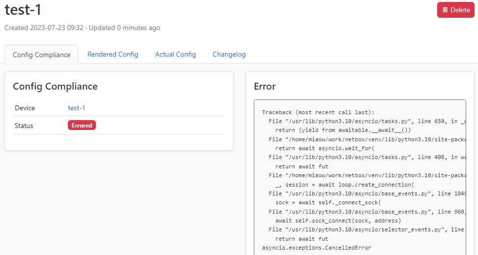
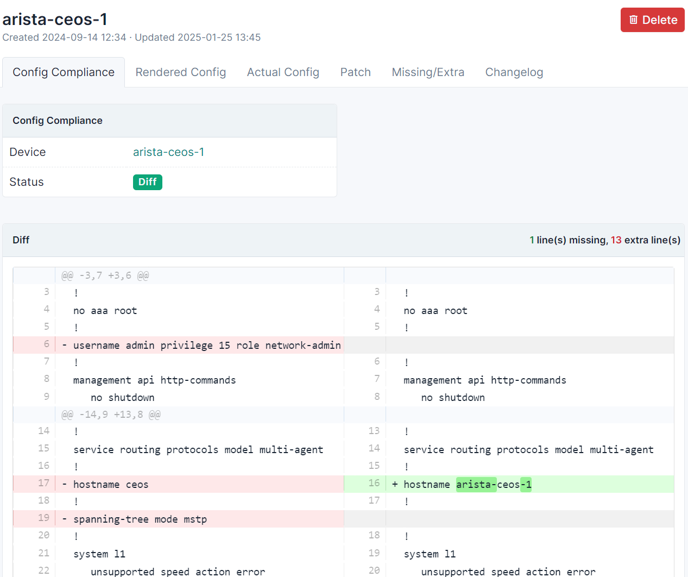
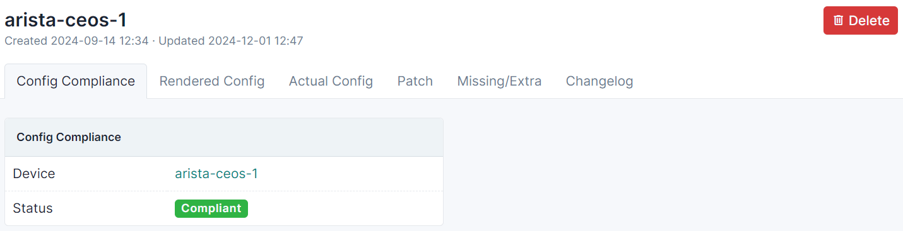
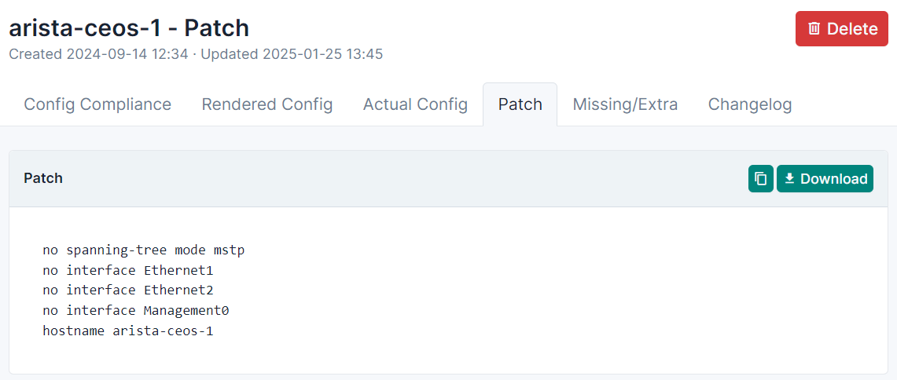
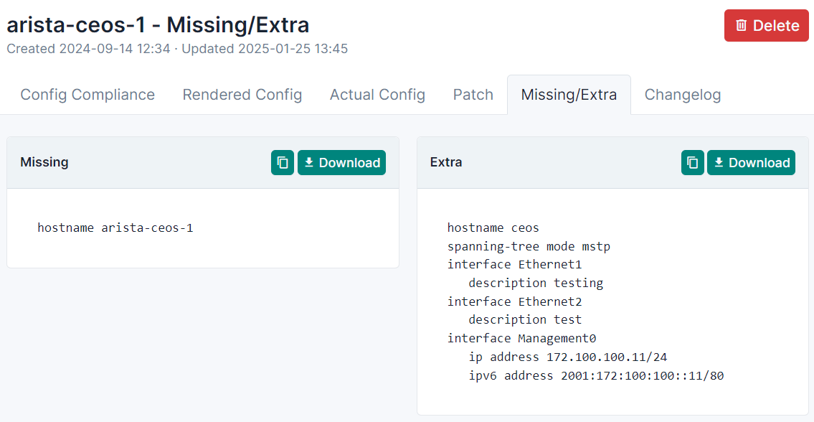

Usage
In navbar serach for Config Diff Plugin menu

PlatformSetting
Add PlatformSetting objects for your platforms in NetBox. This model contains info about how to connect and what to collect from device.
Define:
- Driver for Scrapli, you can find all drivers in Scrapli and Scrapli community documentation.
- Command to collect configuration
- Optional regex patterns to exclude from actual config, specify each pattern on a new line
With regexps you can exclude big parts of the configuration and compare tiny configuration pieces (only ntp configuration).
You can test regexp on the site regex101.com.

Script
Plugin adds a custom script ConfigDiffScript that runs all logic about diff calculations and connections to devices.
You can find scripts list in navbar Customization -> Scripts.

In the script, you can define a site or role, on which devices run compliance, or devices.
If you define all fields, script will run only on devices from Devices field
Warning
Script runs only on devices with assigned Primary IP, Platform and PlatformSetting
If you have configs in NetBox DataSource, you can define it, the script instead of connecting to devices will find configs in DataSource by device's names.
Warning
Be sure that DataSource is synced and has the latest data
Note
Only synced DataSources are acceptable
Note
Diff replaces sequences of 3 or more empty lines with one empty line
If in your DataSource config names are different from the hostnames of the devices, you can specify config name with Jinja2 template in Name template field.
Reference device with {{ object }} variable.
For example, config name is virtual chassis name plus config (switchname-config) and your devices names are switchname1, switchname2 and etc.
You can define Jinja2 template with logic to use virtual chassis name if device is in chassis, else use device name:
{% if object.virtual_chassis %}{{ object.virtual_chassis.name }}-config{% else %}{{ object.name }}{% endif %}
Also you can define custom field which stores actual configuration of devices.

Results
After script is done you can find results in Config Compliances menu. Each device has its own result.

Also result is storing rendered and actual configurations from devices.
Compliance finished with error

Render diff between configurations

No diff

Patch commands
With hier_config library you are able to take a actual configuration of a network device, compare it to its rendered configuration, and build the remediation steps necessary to bring a device into spec with its intended configuration.

Supported platforms:
- Arista EOS (arista_eos)
- Cisco IOS-XE (cisco_iosxe)
- Cisco IOS-XR (cisco_iosxr)
- Cisco NX-OS (cisco_nxos)
However, any NOS that utilizes a CLI syntax that is structured in a similar fasion to IOS should work mostly out of the box.
NOS's that utilize a set based CLI syntax has been added as experimental functionality:
- Juniper JunOS (juniper_junos)
- VyOS (vyos_vyos)
Missing/extra
With the help of netutils library plugin stores missing and extra config lines.

Supported platforms for missing/extra lines:
- Arista EOS (arista_eos)
- Aruba AOSCX (aruba_aoscx)
- Cisco AireOS (cisco_aireos)
- Cisco ASA (cisco_asa)
- Cisco IOS-XE (cisco_iosxe)
- Cisco IOS-XR (cisco_iosxr)
- Cisco NX-OS (cisco_nxos)
- Juniper JunOS (juniper_junos)
- Mikrotik RouterOS (mikrotik_routeros)
- Nokia SROS (nokia_sros)
- PaloAlto PanOS (paloalto_panos)
- Ruckus FastIron (ruckus_fastiron)